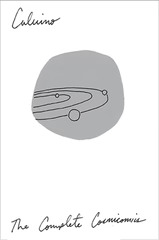

The Complete Cosmicomics
Comprehensive collection combining Cosmicomics, t zero, and other stories
My favorite Calvino sentences are like puzzle boxes or escape rooms; they're garden path sentences, leading you deeper and deeper into the maze until you're almost (but not quite lost) and leaving you to find your own way out. I'm sorry to see the back of Calvino's fiction with The Complete Cosmicomics, finishing off the last set of stories from his cosmicomics cycle -- but I'm left with some of those wonderful sentences, so it's not all bad.
Having just finished Hermit in Paris, I was maybe primed to see more of Calvino's politics in these stories -- and "The Mushroom Moon" was the most obvious of these, with the pull between communism and capitalism playing out in the exploitation of the burgeoning moon. My favorite of the series is "The Stone Sky," though, especially in its first version, before it's made even more explicitly Eurydice; there's something fascinatingly incomplete about this retelling, since here there's no fateful glance backward that leaves Eurydice still in the underworld.